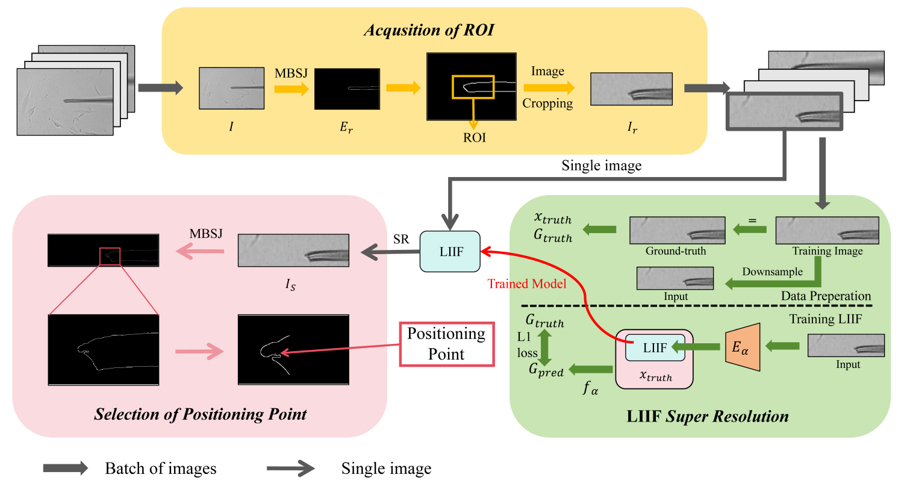

Precise Positioning of Micro Manipulation Tools Based on Super-Resolution
44th Chinese Control Conference (CCC), 2025
We propose a micropipette localization method that combines multiple blur scale edge detection with LIIF super-resolution, using the centroid of tip-edge pixels to estimate the tip position.
Paper